| Potion
|
Description
|
Book Needed
|
Items Needed
|
- HP Increase Potion(Small)
|
- Max HP increased by 500 + (10/3) * [Base Level]
- Restores 1% of the user's max HP
- Duration: 500 seconds
- Weight: 2
|
- How To Increase Stamina
|
- 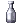 10 Empty Bottle
- 5 Monster Feed
- 10 White Herb
- 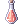 1 Spicy Sauce
|
- 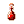 HP Increase Potion(Medium)
|
- Max HP increased by 1500 + (10/3 )* [Base Level]
- Restores 2% of the user's max HP
- Duration: 500 seconds
- Weight: 4
|
- 10 Empty Bottle
- 10 Yellow Herb
- 10 White Herb
- 1 Spicy Sauce
|
 HP Increase Potion(Large) HP Increase Potion(Large)
|
- Max HP increased by 2500 + (10/3) * [Base Level]
- Restores 5% of the user's max HP
- Duration: 500 seconds
- Weight: 8
|
- 10 Empty Bottle
- 15 White Herb
 3 Mastela Fruit 3 Mastela Fruit 1 Holy Water 1 Holy Water- 1 Spicy Sauce
|
- SP Increase Potion(Small)
|
- Max SP increased by ([Base Level/10] - 5)%
- Restores 2% of the user's max SP
- Duration: 500 seconds
- Weight: 8
|
 How To Increase Vitality How To Increase Vitality
|
- 10 Empty Bottle
- 10 Grape
- 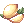 15 Lemon
- 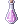 1 Sweet Sauce
|
- SP Increase Potion(Medium)
|
- Max SP increased by [Base Level/10]%
- Restores 4% of the user's max HP
- Duration: 500 seconds
- Weight: 4
|
- 10 Empty Bottle
 10 Honey 10 Honey- 15 Blue Herb
- 1 Sweet Sauce
|
 SP Increase Potion(Large) SP Increase Potion(Large)
|
- Max SP increased by ([Base Level/10] + 5)%
- Restores 8% of the user's max HP
- Duration: 500 seconds
- Weight: 8
|
- 10 Empty Bottle
- 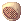 10 Royal Jelly
- 15 Blue Herb
- 1 Sweet Sauce
|
- Enriched White PotionZ
|
- HP Recovery Rate + 20%
- Restores fixed 1,000 HP. This value is unaffected by [Fatal Wound], [Increase HP Recovery], or VIT.
- Duration: 500 seconds
- Weight: 7
|
- How To Make High Quality Potion
|
- 10 Empty Test Tube
 20 White Potion 20 White Potion- 10 White Herb
- 1 Alcohol
|
- 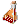 Vitata500
|
- SP Recovery Rate + 20%
- MAX SP + 5%
- Restores fixed 200 SP, unaffected by [Increase SP Recovery] or Int.
- Duration: 500 seconds
- Weight: 5
|
- 10 Empty Test Tube
- 10 Grape
- 10 Honey
- 10 Blue Herb
- 1 Sweet Sauce
|
 Enrich Celermine Juice Enrich Celermine Juice
|
- Aspd +10%
- Duration: 500 seconds
- Weight: 5
|
- 10 Empty Test Tube
- 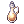 5 Concentration Potion
- 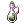 5 Awakening Potion
- 5 Spicy Sauce
|
- 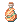 Cure Free
|
- Recovers several kinds of abnormal statuses - Silence, Bleeding, Poison, Curse, Reverse Orcish, Change Undead
- Restores fixed 500 HP, unaffected by [Fatal Wound], [Increase HP Recovery], or VIT.
- Weight: 1
|
- 10 Empty Test Tube
- 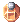 5 Panacea
- 20 Green Herb
- 1 Mastela Fruit
 1 Yggdrasil Leaf 1 Yggdrasil Leaf
|
 Thorn Plant Seed Thorn Plant Seed
|
- Be careful of the sharp thorns that surround this.
- Item needed for the following Geneticist Skills -
 Thorn Trap , Thorn Trap ,  Wall of Thorn and Wall of Thorn and  Crazy Weed . Crazy Weed .
- Weight: 0.1
|
- How To Grow Plant Genes
|
- 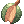 10 Prickly Fruit
|
 Blood Sucker Plant Seed Blood Sucker Plant Seed
|
- An unpleasant seed that is used for reddish fruits, it looks as if blood is inside of it.
- Item needed for the following Geneticist Skill -
 Blood Sucker . Blood Sucker .
- Weight: 0.1
|
- 10 Maneater Root
|
 Bomb Mushroom Spore Bomb Mushroom Spore
|
- A purplish spore. When it's touched a purple dust curls up that you need to be careful of.
- Item needed for the following Geneticist Skill -
 Spore Explosion . Spore Explosion .
- Weight: 0.1
|
- 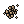 10 Mushroom Spore
 5 Poison Spore 5 Poison Spore- 2 Gun Powder
|